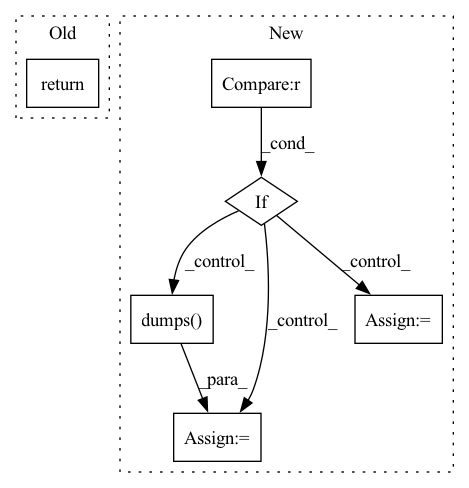

Pattern ID :24760
Before Change
return isinstance(other, Azure)
def make_deploy_resources_variables(self, task):
return {"instance_type": task.best_resources.instance_type}
@classmethod
def get_default_instance_type(cls):After Change
r = task.best_resources
// r.accelerators is cleared but .instance_type encodes the info.
acc_dict = self.get_accelerators_from_instance_type(r.instance_type)
if acc_dict is not None :
custom_resources = json.dumps( acc_dict, separators=(",", ":"))
else:
custom_resources = None
return {
"instance_type": r.instance_type,
"custom_resources": custom_resources,In pattern: SUPERPATTERN
Frequency: 3
Non-data size: 6
Instances Fragment ID: 76621331
Project Name: skypilot-org/skypilot
Commit Name: 23a54a2e2c52c623fa321ed85f45e04500f6ed0c
Time: 2021-11-10
Author: concretevitamin@users.noreply.github.com
File Name: prototype/sky/clouds/azure.py
M Class Name: Azure
N Class Name: Azure
M Method Name: make_deploy_resources_variables(2)
N Method Name: make_deploy_resources_variables(2)
M Parent Class: clouds.Cloud
N Parent Class: clouds.Cloud
M File Name: prototype/sky/clouds/azure.py
N File Name: prototype/sky/clouds/azure.py
M Start Line: 58
M End Line: 58
N Start Line: 78
N End Line: 88
Before Change
return isinstance(other, AWS)
def make_deploy_resources_variables(self, task):
return {"instance_type": task.best_resources.instance_type}
@classmethod
def get_default_instance_type(cls):After Change
r = task.best_resources
// r.accelerators is cleared but .instance_type encodes the info.
acc_dict = self.get_accelerators_from_instance_type(r.instance_type)
if acc_dict is not None :
custom_resources = json.dumps( acc_dict, separators=(",", ":"))
else:
custom_resources = None
return {
"instance_type": r.instance_type,
"custom_resources": custom_resources, Fragment ID: 76621324
Project Name: skypilot-org/skypilot
Commit Name: 23a54a2e2c52c623fa321ed85f45e04500f6ed0c
Time: 2021-11-10
Author: concretevitamin@users.noreply.github.com
File Name: prototype/sky/clouds/aws.py
M Class Name: AWS
N Class Name: AWS
M Method Name: make_deploy_resources_variables(2)
N Method Name: make_deploy_resources_variables(2)
M Parent Class: clouds.Cloud
N Parent Class: clouds.Cloud
M File Name: prototype/sky/clouds/aws.py
N File Name: prototype/sky/clouds/aws.py
M Start Line: 42
M End Line: 42
N Start Line: 69
N End Line: 80
Before Change
indent=4,
)
return fStatistical parametric SVS (sampling rate: {self.config.sample_rate})
Time-lag model: {timelag_str}
Duration model: {duration_str}
Acoustic model: {acoustic_str}After Change
Duration model: {duration_str}
Acoustic model: {acoustic_str}
if self.vocoder is not None :
vocoder_params = {
"generator_type": self.vocoder_config.get(
"generator_type", "ParallelWaveGANGenerator" // type: ignore
),
"generator_params": OmegaConf.to_container(
self.vocoder_config.generator_params
),
}
vocoder_str = json.dumps(
vocoder_params,
sort_keys=False,
indent=4,
)
repr += f"Vocoder model: {vocoder_str}\n"
else:
repr += "Vocoder model: WORLD\n"
return repr
Fragment ID: 76621327
Project Name: r9y9/nnsvs
Commit Name: 378ab8f4bd4564283718afd3d3fdf87971c059e0
Time: 2022-04-08
Author: zryuichi@gmail.com
File Name: nnsvs/svs.py
M Class Name: SPSVS
N Class Name: SPSVS
M Method Name: __repr__(1)
N Method Name: __repr__(1)
M Parent Class: object
N Parent Class: object
M File Name: nnsvs/svs.py
N File Name: nnsvs/svs.py
M Start Line: 129
M End Line: 133
N Start Line: 145
N End Line: 168